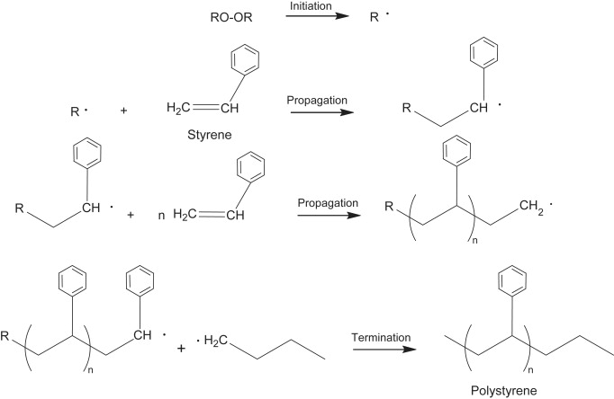
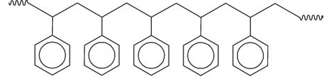
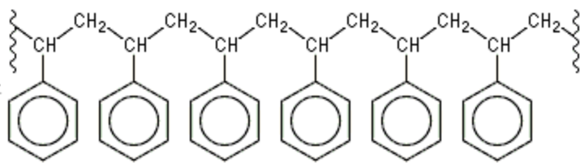
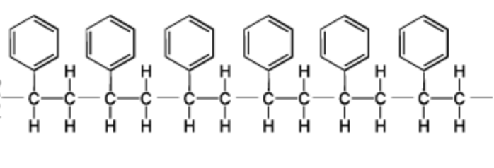

Polystyrene, commonly referred to as styrofoam, is an additional polymer that is produced when the styrene monomer
is polymerized

The polystyrene chain is made up of hydrogen and carbons, with a phenyl group attached to every other carbon
The IUPAC name for Polystyrene is: Poly(1-phenylethane) and the common name for this compound is styrofoam and polystyrene
Line Structure

Condensed structure

Expanded/structural form

Functional Groups
The funcinal group that is present in this compound is a phenyl group. The IUPAC name is cyclyhex-1,3,5-triene. This is a phenyl group instead of a Benzene because it is not apart of the parent chain on the molecule. The functional group which is added to this compound is called Benzene, the IUPAC name given is cyclohex-1,3,5-triene. Due to the benzene being a side branch added onto the parent chain, it would be considered a phenyl group instead. It is composed of 6 carbons, and 6 hydrogens and is attached in a cyclic ring-like structure.
Physical properties
Melting point: 250°C
Boiling point: 430°C
Solubility: Insoluble
Hardness: Brittle
Electric conductivity: No
Thermal conductivity: Weak conductor
Since polystyrene is a molecule made only of carbon bonds it is a nonpolar molecule, therefore the only IMF this molecule has is the London dispersion force. It has a melting point of around 250°C, and a boiling point of 430°C, is insoluble in water, is not conductive to electricity, and has a very weak thermal conductor. Non-polar molecules tend to have low melting points since the London dispersion force is the weakest IMF, however, since polystyrene is a large molecule with thousands of bonds the London dispersion force is strong allowing the melting point to be high. This can also explain why it is a fairly hard plastic. The insolubility of polystyrene is due to the London dispersion force not easily broken by the polar water molecules.